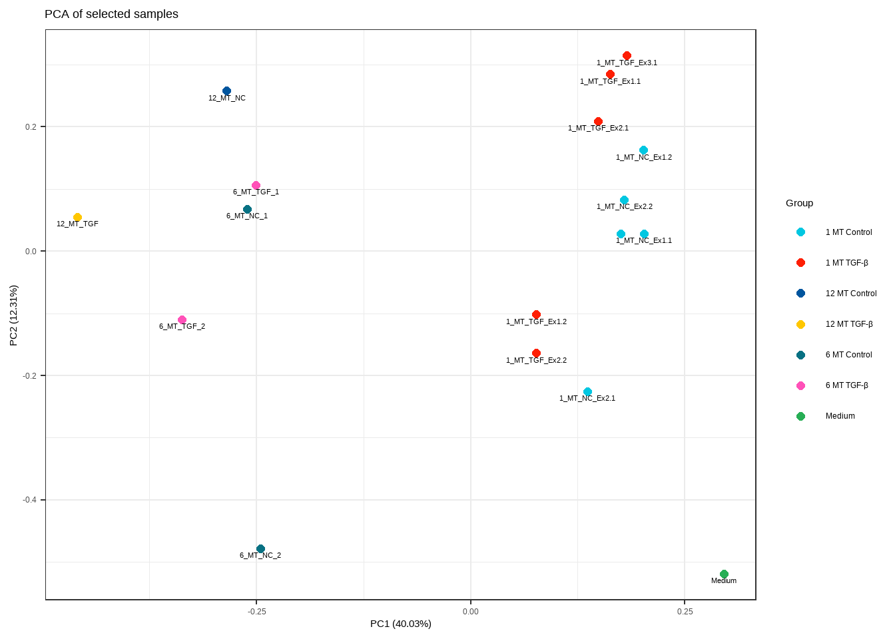
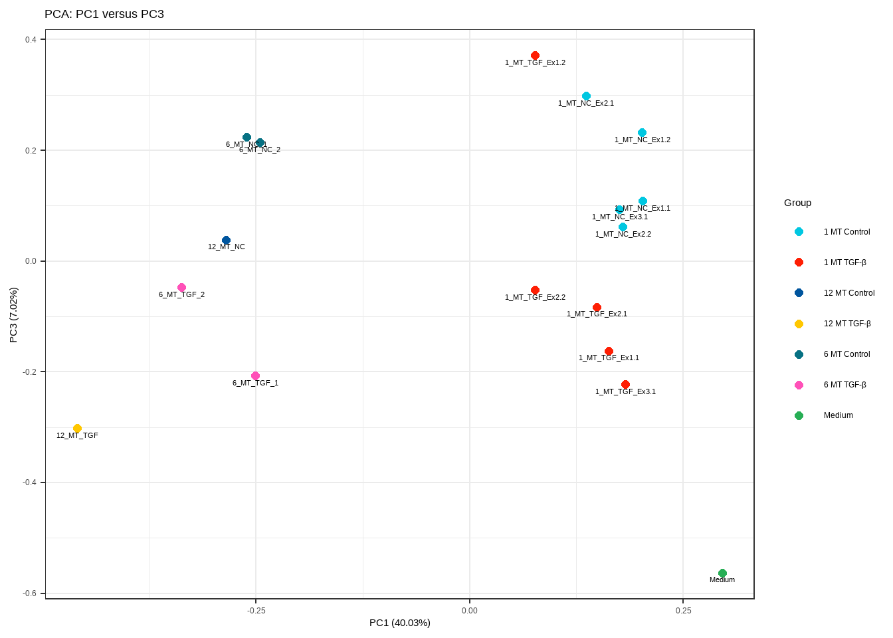
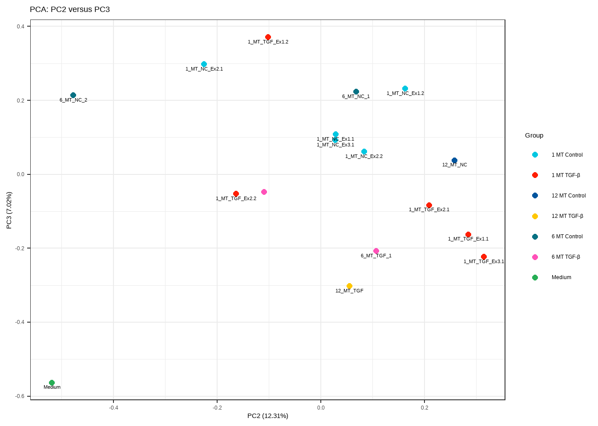

Olink data import
Last updated: 2026-07-16
Checks: 6 1
Knit directory: olink-analysis/
This reproducible R Markdown analysis was created with workflowr (version 1.7.2). The Checks tab describes the reproducibility checks that were applied when the results were created. The Past versions tab lists the development history.
The R Markdown file has unstaged changes. To know which version of
the R Markdown file created these results, you’ll want to first commit
it to the Git repo. If you’re still working on the analysis, you can
ignore this warning. When you’re finished, you can run
wflow_publish to commit the R Markdown file and build the
HTML.
Great job! The global environment was empty. Objects defined in the global environment can affect the analysis in your R Markdown file in unknown ways. For reproduciblity it’s best to always run the code in an empty environment.
The command set.seed(20260713) was run prior to running
the code in the R Markdown file. Setting a seed ensures that any results
that rely on randomness, e.g. subsampling or permutations, are
reproducible.
Great job! Recording the operating system, R version, and package versions is critical for reproducibility.
Nice! There were no cached chunks for this analysis, so you can be confident that you successfully produced the results during this run.
Great job! Using relative paths to the files within your workflowr project makes it easier to run your code on other machines.
Great! You are using Git for version control. Tracking code development and connecting the code version to the results is critical for reproducibility.
The results in this page were generated with repository version a9eb88a. See the Past versions tab to see a history of the changes made to the R Markdown and HTML files.
Note that you need to be careful to ensure that all relevant files for
the analysis have been committed to Git prior to generating the results
(you can use wflow_publish or
wflow_git_commit). workflowr only checks the R Markdown
file, but you know if there are other scripts or data files that it
depends on. Below is the status of the Git repository when the results
were generated:
Ignored files:
Ignored: .Rhistory
Ignored: .Rproj.user/
Ignored: analysis/figure/
Untracked files:
Untracked: analysis/Proteomics_combined_final (2).Rmd
Untracked: analysis/output/
Untracked: data/Reveal_Fixed_LOD.csv
Untracked: data/pre_quant.csv
Untracked: output/npx_selected_qc.rds
Untracked: output/npx_selected_with_lod_qc.rds
Unstaged changes:
Modified: analysis/01_import_olink.Rmd
Note that any generated files, e.g. HTML, png, CSS, etc., are not included in this status report because it is ok for generated content to have uncommitted changes.
These are the previous versions of the repository in which changes were
made to the R Markdown (analysis/01_import_olink.Rmd) and
HTML (docs/01_import_olink.html) files. If you’ve
configured a remote Git repository (see ?wflow_git_remote),
click on the hyperlinks in the table below to view the files as they
were in that past version.
| File | Version | Author | Date | Message |
|---|---|---|---|---|
| html | 2d7fdfa | ellenkossmann | 2026-07-15 | Build site. |
| Rmd | 4612c15 | ellenkossmann | 2026-07-15 | Publish Olink data import |
Load packages
library(workflowr)
library(OlinkAnalyze)
library(tidyverse)── Attaching core tidyverse packages ──────────────────────── tidyverse 2.0.0 ──
✔ dplyr 1.2.1 ✔ readr 2.2.0
✔ forcats 1.0.1 ✔ stringr 1.6.0
✔ ggplot2 4.0.3 ✔ tibble 3.3.1
✔ lubridate 1.9.5 ✔ tidyr 1.3.2
✔ purrr 1.2.2
── Conflicts ────────────────────────────────────────── tidyverse_conflicts() ──
✖ dplyr::filter() masks stats::filter()
✖ dplyr::lag() masks stats::lag()
ℹ Use the conflicted package (<http://conflicted.r-lib.org/>) to force all conflicts to become errorslibrary(here)here() starts at C:/Users/Ellen/OneDrive/Dokumente/olink-analysisset.seed(123)Define the input file
#telling here where the report sits
here::i_am("analysis/01_import_olink.Rmd")here() starts at C:/Users/Ellen/OneDrive/Dokumente/olink-analysisdata_file <- here::here("data", "pre_quant.csv")
file.exists(data_file)[1] TRUEImport the Olink data
npx_raw <- OlinkAnalyze::read_npx(
filename = data_file,
out_df = "tibble",
long_format = TRUE,
olink_platform = "Reveal",
data_type = "NPX",
quiet = FALSE
)Detected data in long format!Inspect the imported data
#dataset dimensions
dim(npx_raw)[1] 99264 35#columns, types, and examples values
dplyr::glimpse(npx_raw)Rows: 99,264
Columns: 35
$ SampleID <chr> "EX2_Con2_TGF", "EX2_Con1_NC", "CZD12_CTO_ME",…
$ SampleType <chr> "SAMPLE", "SAMPLE", "SAMPLE", "SAMPLE", "SAMPL…
$ WellID <chr> "A1", "A2", "A3", "A4", "A5", "A6", "A7", "A8"…
$ PlateID <chr> "plate1", "plate1", "plate1", "plate1", "plate…
$ DataAnalysisRefID <chr> "R10002", "R10002", "R10002", "R10002", "R1000…
$ OlinkID <chr> "OID50348", "OID50348", "OID50348", "OID50348"…
$ UniProt <chr> "Q7Z7G0", "Q7Z7G0", "Q7Z7G0", "Q7Z7G0", "Q7Z7G…
$ Assay <chr> "ABI3BP", "ABI3BP", "ABI3BP", "ABI3BP", "ABI3B…
$ AssayType <chr> "assay", "assay", "assay", "assay", "assay", "…
$ Panel <chr> "Reveal", "Reveal", "Reveal", "Reveal", "Revea…
$ Block <int> 1, 1, 1, 1, 1, 1, 1, 1, 1, 1, 1, 1, 1, 1, 1, 1…
$ Count <int> 4549, 4792, 496203, 28694, 3807, 78277, 3164, …
$ ExtNPX <dbl> -3.5495937, -3.5358400, 4.7529960, -0.1054564,…
$ NPX <dbl> -1.0009055, -0.9871520, 7.3016839, 2.4432318, …
$ Normalization <chr> "Intensity", "Intensity", "Intensity", "Intens…
$ PCNormalizedNPX <dbl> -3.8269532, -3.8131998, 4.4756365, -0.3828160,…
$ AssayQC <chr> "PASS", "PASS", "PASS", "PASS", "PASS", "PASS"…
$ SampleQC <chr> "PASS", "PASS", "PASS", "PASS", "PASS", "PASS"…
$ SoftwareVersion <chr> "01.03.2000", "01.03.2000", "01.03.2000", "01.…
$ SoftwareName <chr> "NPX Map CLI", "NPX Map CLI", "NPX Map CLI", "…
$ PanelDataArchiveVersion <chr> "01.03.2000", "01.03.2000", "01.03.2000", "01.…
$ PreProcessingVersion <chr> "06.02.2000", "06.02.2000", "06.02.2000", "06.…
$ PreProcessingSoftware <chr> "ngs2counts", "ngs2counts", "ngs2counts", "ngs…
$ InstrumentType <chr> "Illumina NovaSeq X Plus", "Illumina NovaSeq X…
$ Group_Name1 <chr> "MT_TGF", "MT_C", NA, NA, NA, NA, NA, NA, NA, …
$ Group_Name2 <chr> "MT_TGF", NA, NA, NA, "MT_TGF_HMC", NA, NA, NA…
$ Group_Name3 <chr> NA, "MT_C", NA, NA, NA, NA, "MT_C_HMC", NA, "M…
$ Group_Name4 <chr> NA, NA, NA, NA, NA, NA, "MT_C_HMC", NA, "MT_C_…
$ Group_Name5 <chr> NA, NA, NA, NA, "MT_TGF_HMC", NA, "MT_C_HMC", …
$ Group_Name6 <chr> NA, NA, NA, NA, NA, NA, NA, NA, NA, NA, NA, "S…
$ Group_Name7 <chr> NA, NA, NA, NA, "MT_TGF_HMC", NA, NA, NA, NA, …
$ Group_Name8 <chr> NA, NA, NA, "HF_Fib_CM", NA, "HF_Fib_CM", NA, …
$ Group_Name9 <chr> NA, NA, NA, NA, NA, NA, NA, NA, NA, NA, NA, "S…
$ Group_Name10 <chr> NA, NA, "CZD_CTO", NA, NA, NA, NA, NA, NA, NA,…
$ Group_Name11 <chr> NA, NA, NA, NA, NA, NA, NA, NA, NA, NA, NA, "S…Dataset summary
#summarizes the dataset, e.g. how many samples, how many controls etc.
dataset_summary <- npx_raw |>
dplyr::summarise(
rows = dplyr::n(),
sample_ids = dplyr::n_distinct(SampleID),
biological_samples = dplyr::n_distinct(
SampleID[SampleType == "SAMPLE"]
),
assays = dplyr::n_distinct(OlinkID),
assay_names = dplyr::n_distinct(Assay),
plates = dplyr::n_distinct(PlateID),
panels = dplyr::n_distinct(Panel),
data_analysis_reference_ids =
dplyr::n_distinct(DataAnalysisRefID)
)
dataset_summary# A tibble: 1 × 8
rows sample_ids biological_samples assays assay_names plates panels
<int> <int> <int> <int> <int> <int> <int>
1 99264 96 86 1034 1034 1 1
# ℹ 1 more variable: data_analysis_reference_ids <int>#check what the dataset looks like
npx_raw |>
dplyr::select(
SampleID,
SampleType,
PlateID,
OlinkID,
Assay,
AssayType,
NPX,
Count,
AssayQC,
SampleQC,
DataAnalysisRefID
) |>
dplyr::slice_head(n = 10)# A tibble: 10 × 11
SampleID SampleType PlateID OlinkID Assay AssayType NPX Count AssayQC
<chr> <chr> <chr> <chr> <chr> <chr> <dbl> <int> <chr>
1 EX2_Con2_TGF SAMPLE plate1 OID503… ABI3… assay -1.00 4549 PASS
2 EX2_Con1_NC SAMPLE plate1 OID503… ABI3… assay -0.987 4792 PASS
3 CZD12_CTO_ME SAMPLE plate1 OID503… ABI3… assay 7.30 496203 PASS
4 HT27_Fib_CM SAMPLE plate1 OID503… ABI3… assay 2.44 28694 PASS
5 EX3_H1_TGF SAMPLE plate1 OID503… ABI3… assay -1.37 3807 PASS
6 LV47_Fib_CM SAMPLE plate1 OID503… ABI3… assay 4.08 78277 PASS
7 EX1_H_NC SAMPLE plate1 OID503… ABI3… assay -1.46 3164 PASS
8 Fib_Medium SAMPLE plate1 OID503… ABI3… assay -1.36 3716 PASS
9 EX3_H1_NC SAMPLE plate1 OID503… ABI3… assay -1.90 2614 PASS
10 LV69_Fib_CM SAMPLE plate1 OID503… ABI3… assay 1.15 16329 PASS
# ℹ 2 more variables: SampleQC <chr>, DataAnalysisRefID <chr>#check that in the datafile we have no NAs where we don't want them etc.
npx_check <- OlinkAnalyze::check_npx(
df = npx_raw
)ℹ More than one column names in `df` was associated with certain key. One was
selected based on an ordered list:
* "quant": "NPX" was selected. Options were "NPX" or "PCNormalizedNPX".
Please use `preferred_names` to select a different column name.
duckdb is keeping downloaded extensions in a temporary directory:
ℹ C:\Users\Ellen\AppData\Local\Temp\RtmpERZDGT/duckdb/extensions
This is removed when the R session ends, so extensions are re-downloaded each session.
ℹ To keep them, point `options(duckdb.extension_directory =)` or the `DUCKDB_EXTENSION_DIRECTORY` environment variable at a permanent path.
1 assay exhibited assay QC warnings in column `AssayQC` of the dataset:
"OID50794".
ℹ Consider running `clean_npx()` next!npx_check$col_names
$col_names$sample_id
[1] "SampleID"
$col_names$sample_type
[1] "SampleType"
$col_names$assay_type
[1] "AssayType"
$col_names$olink_id
[1] "OlinkID"
$col_names$uniprot
[1] "UniProt"
$col_names$assay
[1] "Assay"
$col_names$panel
[1] "Panel"
$col_names$block
[1] "Block"
$col_names$plate_id
[1] "PlateID"
$col_names$panel_version
[1] "DataAnalysisRefID"
$col_names$quant
[1] "NPX"
$col_names$ext_npx
[1] "ExtNPX"
$col_names$count
[1] "Count"
$col_names$qc_warning
[1] "SampleQC"
$col_names$assay_warn
[1] "AssayQC"
$col_names$normalization
[1] "Normalization"
$col_names$qc_version
[1] "PanelDataArchiveVersion"
$oid_invalid
character(0)
$assay_na
character(0)
$sample_id_dups
character(0)
$sample_id_na
character(0)
$col_class
# A tibble: 0 × 4
# ℹ 4 variables: col_name <chr>, col_class <chr>, col_key <chr>,
# expected_col_class <chr>
$assay_qc
[1] "OID50794"
$non_unique_uniprot
character(0)
$darid_invalid
# A tibble: 0 × 2
# ℹ 2 variables: DataAnalysisRefID <chr>, PanelDataArchiveVersion <chr>npx_raw |>
dplyr::filter(OlinkID == "OID50794") |>
dplyr::count(Assay, AssayQC)# A tibble: 1 × 3
Assay AssayQC n
<chr> <chr> <int>
1 NPM1 WARN 96npx_raw |>
dplyr::filter(
OlinkID == "OID50794",
is.na(AssayQC) | AssayQC != "PASS"
) |>
dplyr::select(
SampleID,
PlateID,
OlinkID,
Assay,
NPX,
AssayQC,
SampleQC
)# A tibble: 96 × 7
SampleID PlateID OlinkID Assay NPX AssayQC SampleQC
<chr> <chr> <chr> <chr> <dbl> <chr> <chr>
1 EX2_Con2_TGF plate1 OID50794 NPM1 0.00788 WARN PASS
2 EX2_Con1_NC plate1 OID50794 NPM1 0.330 WARN PASS
3 CZD12_CTO_ME plate1 OID50794 NPM1 2.22 WARN PASS
4 HT27_Fib_CM plate1 OID50794 NPM1 -0.147 WARN PASS
5 EX3_H1_TGF plate1 OID50794 NPM1 -0.695 WARN PASS
6 LV47_Fib_CM plate1 OID50794 NPM1 -0.0259 WARN PASS
7 EX1_H_NC plate1 OID50794 NPM1 -0.990 WARN PASS
8 Fib_Medium plate1 OID50794 NPM1 -1.31 WARN PASS
9 EX3_H1_NC plate1 OID50794 NPM1 -1.13 WARN PASS
10 LV69_Fib_CM plate1 OID50794 NPM1 -0.349 WARN PASS
# ℹ 86 more rowsIdentify Samples above and below LOD
prepare and validate the Fixed LOD reference
lod_file <- here::here(
"data",
"Reveal_Fixed_LOD.csv"
)
lod_file[1] "C:/Users/Ellen/OneDrive/Dokumente/olink-analysis/data/Reveal_Fixed_LOD.csv"file.exists(lod_file)[1] TRUE# this file will be used as a reference for the LODs later on
fixed_lod <- readr::read_delim(
file = lod_file,
delim = ";",
locale = readr::locale(decimal_mark = "."),
trim_ws = TRUE,
show_col_types = FALSE
)
# Basic import checks
dim(fixed_lod)[1] 3102 12dplyr::glimpse(fixed_lod)Rows: 3,102
Columns: 12
$ OlinkID <chr> "OID50004", "OID50005", "OID50006", "OID50007", "O…
$ AssayType <chr> "assay", "assay", "assay", "assay", "assay", "assa…
$ UniProt <chr> "P24385", "Q8N2Z9", "P11308", "Q9UI08", "Q9UH90", …
$ Assay <chr> "CCND1", "CENPS", "ERG", "EVL", "FBXO40", "GSDMD",…
$ Panel <chr> "Reveal", "Reveal", "Reveal", "Reveal", "Reveal", …
$ Block <dbl> 1, 1, 1, 1, 1, 1, 1, 1, 1, 1, 1, 1, 1, 1, 1, 1, 1,…
$ DataAnalysisRefID <chr> "R10001", "R10001", "R10001", "R10001", "R10001", …
$ BimodalDistribution <lgl> FALSE, FALSE, FALSE, FALSE, FALSE, FALSE, FALSE, F…
$ LODNPX <dbl> -0.164366771, -0.590656917, -1.727214652, -2.79347…
$ LODCount <dbl> 2154, 1034, 658, 522, 20978, 540, 3474, 1524, 1224…
$ LODMethod <chr> "lod_npx", "lod_npx", "lod_npx", "lod_npx", "lod_n…
$ Version <chr> "10.0.0", "10.0.0", "10.0.0", "10.0.0", "10.0.0", …readr::problems(fixed_lod)# A tibble: 0 × 5
# ℹ 5 variables: row <int>, col <int>, expected <chr>, actual <chr>, file <chr>identify the required reference IDs for my dataset
required_reference_ids <- sort(
unique(npx_raw$DataAnalysisRefID)
)
required_reference_ids[1] "R10002"# Keep only the Fixed LOD definitions that apply to this project
fixed_lod_project <- fixed_lod |>
dplyr::filter(
DataAnalysisRefID %in% required_reference_ids,
AssayType == "assay"
)
#check which reference IDs were matched and how many assays use each LOD method
fixed_lod_project |>
dplyr::count(
DataAnalysisRefID,
LODMethod
)# A tibble: 2 × 3
DataAnalysisRefID LODMethod n
<chr> <chr> <int>
1 R10002 lod_count 121
2 R10002 lod_npx 913fixed_lod_project |>
dplyr::count(LODMethod)# A tibble: 2 × 2
LODMethod n
<chr> <int>
1 lod_count 121
2 lod_npx 913# Only these two methods are expected
unexpected_lod_methods <- setdiff(
unique(fixed_lod_project$LODMethod),
c("lod_npx", "lod_count")
)
if (length(unexpected_lod_methods) > 0) {
stop(
"Unexpected LOD method(s): ",
paste(unexpected_lod_methods, collapse = ", ")
)
}check the Fixed LOD table for duplicates and missing values
#define the LOD key
lod_key <- c(
"OlinkID",
"DataAnalysisRefID"
)
# Check for duplicate Fixed LOD definitions (important so that we don't create mismatches) -> result must be empty before proceeding, otherwise we have one sample-assay row with more than one LOD definition
duplicate_lod_definitions <- fixed_lod_project |>
dplyr::count(
dplyr::across(
dplyr::all_of(lod_key)
),
name = "number_of_definitions"
) |>
dplyr::filter(
number_of_definitions > 1
)
duplicate_lod_definitions# A tibble: 0 × 3
# ℹ 3 variables: OlinkID <chr>, DataAnalysisRefID <chr>,
# number_of_definitions <int>if (nrow(duplicate_lod_definitions) > 0) {
stop("Duplicate assay definitions were found in the Fixed LOD table.")
}
# Check whether every assay in the NPX data has an LOD definition
missing_lod_definitions <- npx_raw |>
dplyr::filter(
AssayType == "assay"
) |>
dplyr::distinct(
dplyr::across(
dplyr::all_of(lod_key)
)
) |>
dplyr::anti_join(
fixed_lod_project |>
dplyr::distinct(
dplyr::across(
dplyr::all_of(lod_key)
)
),
by = lod_key
)
missing_lod_definitions# A tibble: 0 × 2
# ℹ 2 variables: OlinkID <chr>, DataAnalysisRefID <chr>if (nrow(missing_lod_definitions) > 0) {
stop("Some assays do not have a matching Fixed LOD definition.")
}
#confirm that the threshold has a value and not an NA
invalid_lod_definitions <- fixed_lod_project |>
dplyr::filter(
!LODMethod %in% c("lod_npx", "lod_count") |
(LODMethod == "lod_npx" &
is.na(LODNPX)) |
(LODMethod == "lod_count" &
(is.na(LODCount) | LODCount <= 0))
) |>
dplyr::select(
OlinkID,
DataAnalysisRefID,
Assay,
LODMethod,
LODNPX,
LODCount
)
invalid_lod_definitions# A tibble: 0 × 6
# ℹ 6 variables: OlinkID <chr>, DataAnalysisRefID <chr>, Assay <chr>,
# LODMethod <chr>, LODNPX <dbl>, LODCount <dbl>#we are checking in three things in this chunk, all three generated tables should be empty (duplicate_lod_definitions, missing_lod_definitions, and invalid_lod_definitions)set which quantitative column should be used
# Explicitly select NPX as the primary quantitative column
npx_check <- OlinkAnalyze::check_npx(
df = npx_raw,
preferred_names = c("quant" = "NPX")
)1 assay exhibited assay QC warnings in column `AssayQC` of the dataset:
"OID50794".
ℹ Consider running `clean_npx()` next!npx_check$col_names
$col_names$sample_id
[1] "SampleID"
$col_names$sample_type
[1] "SampleType"
$col_names$assay_type
[1] "AssayType"
$col_names$olink_id
[1] "OlinkID"
$col_names$uniprot
[1] "UniProt"
$col_names$assay
[1] "Assay"
$col_names$panel
[1] "Panel"
$col_names$block
[1] "Block"
$col_names$plate_id
[1] "PlateID"
$col_names$panel_version
[1] "DataAnalysisRefID"
$col_names$quant
[1] "NPX"
$col_names$ext_npx
[1] "ExtNPX"
$col_names$count
[1] "Count"
$col_names$qc_warning
[1] "SampleQC"
$col_names$assay_warn
[1] "AssayQC"
$col_names$normalization
[1] "Normalization"
$col_names$qc_version
[1] "PanelDataArchiveVersion"
$oid_invalid
character(0)
$assay_na
character(0)
$sample_id_dups
character(0)
$sample_id_na
character(0)
$col_class
# A tibble: 0 × 4
# ℹ 4 variables: col_name <chr>, col_class <chr>, col_key <chr>,
# expected_col_class <chr>
$assay_qc
[1] "OID50794"
$non_unique_uniprot
character(0)
$darid_invalid
# A tibble: 0 × 2
# ℹ 2 variables: DataAnalysisRefID <chr>, PanelDataArchiveVersion <chr>prepare the full dataset for LOD integration
# Keep control samples, control assays, assay warnings and sample warnings.
# These should not be removed before olink_lod() is run.
# olink specifically recommends running clean_npx() befrore LOD integration
npx_pre_lod <- OlinkAnalyze::clean_npx(
df = npx_raw,
check_log = npx_check,
remove_control_assay = FALSE,
remove_control_sample = FALSE,
remove_assay_warning = FALSE,
remove_qc_warning = FALSE
)
# Confirm that the expected rows remain
tibble::tibble(
dataset = c(
"Imported data",
"Pre-LOD cleaned data"
),
rows = c(
nrow(npx_raw),
nrow(npx_pre_lod)
),
columns = c(
ncol(npx_raw),
ncol(npx_pre_lod)
)
)# A tibble: 2 × 3
dataset rows columns
<chr> <int> <int>
1 Imported data 99264 35
2 Pre-LOD cleaned data 99264 35# Generate a check log for the exact object supplied to olink_lod(). This might seem redundant because we already checked twice with check_npx but check again right before olink_lod to be sure that nothing changed while running the other functions.olink specifically recommends to run check_npx again after cleaning!
npx_pre_lod_check <- OlinkAnalyze::check_npx(
df = npx_pre_lod,
preferred_names = c("quant" = "NPX")
)1 assay exhibited assay QC warnings in column `AssayQC` of the dataset:
"OID50794".
ℹ Consider running `clean_npx()` next!npx_pre_lod_check$col_names
$col_names$sample_id
[1] "SampleID"
$col_names$sample_type
[1] "SampleType"
$col_names$assay_type
[1] "AssayType"
$col_names$olink_id
[1] "OlinkID"
$col_names$uniprot
[1] "UniProt"
$col_names$assay
[1] "Assay"
$col_names$panel
[1] "Panel"
$col_names$block
[1] "Block"
$col_names$plate_id
[1] "PlateID"
$col_names$panel_version
[1] "DataAnalysisRefID"
$col_names$quant
[1] "NPX"
$col_names$ext_npx
[1] "ExtNPX"
$col_names$count
[1] "Count"
$col_names$qc_warning
[1] "SampleQC"
$col_names$assay_warn
[1] "AssayQC"
$col_names$normalization
[1] "Normalization"
$col_names$qc_version
[1] "PanelDataArchiveVersion"
$oid_invalid
character(0)
$assay_na
character(0)
$sample_id_dups
character(0)
$sample_id_na
character(0)
$col_class
# A tibble: 0 × 4
# ℹ 4 variables: col_name <chr>, col_class <chr>, col_key <chr>,
# expected_col_class <chr>
$assay_qc
[1] "OID50794"
$non_unique_uniprot
character(0)
$darid_invalid
# A tibble: 0 × 2
# ℹ 2 variables: DataAnalysisRefID <chr>, PanelDataArchiveVersion <chr>run the Fixed LOD integration
#this line actually runs the lod
npx_with_lod <- OlinkAnalyze::olink_lod(
data = npx_pre_lod,
lod_method = "FixedLOD",
lod_file_path = lod_file,
check_log = npx_pre_lod_check
)
# Confirm that olink_lod() retained the rows and added the expected columns.
tibble::tibble(
dataset = c(
"Before LOD integration",
"After LOD integration"
),
rows = c(
nrow(npx_pre_lod),
nrow(npx_with_lod)
),
columns = c(
ncol(npx_pre_lod),
ncol(npx_with_lod)
)
)# A tibble: 2 × 3
dataset rows columns
<chr> <int> <int>
1 Before LOD integration 99264 35
2 After LOD integration 99264 37# This should return character(0).
setdiff(
c("LOD", "PCNormalizedLOD"),
names(npx_with_lod)
)character(0)# Inspect which normalization is represented in the dataset.
npx_with_lod |>
dplyr::count(
Normalization
)# A tibble: 1 × 2
Normalization n
<chr> <int>
1 Intensity 99264olink_lod() calculates normalization-compatible LOD values for assays using an NPX-based Fixed LOD. For assays using a count-based Fixed LOD, conversion of LODCount to an NPX-scale threshold requires extension-control counts and plate-control measurements. The necessary extension-control assay rows are absent from the supplied CSV, resulting in missing NPX-scale LOD values for these assays. Additionally, low-count values that were converted to NPX values need to be interpreted with caution. In the next sections of code, count-based assays are therefore classified directly by comparing the observed assay count with the corresponding Fixed LOD count threshold. This classification is used only to determine whether a measurement is above or below LOD; it does not reconstruct an NPX-scale LOD value.
check the LODs for counts, where necessary
#reattach LODMethod and the count threshold because olink_lod() does not retain them
lod_lookup <- fixed_lod_project |>
dplyr::select(
dplyr::all_of(lod_key),
LODMethod,
FixedLODNPX_reference = LODNPX,
FixedLODCount_reference = LODCount
)
# Attach the Fixed LOD method and classify each protein measurement.
#
# lod_npx:
# Compare final NPX with the normalization-compatible LOD produced by olink_lod().
#
# lod_count:
# Compare the raw assay count with the original Fixed LOD count threshold, because the extension-control rows required to produce an NPX-scale threshold are absent from the supplied dataset.
npx_lod_classified <- npx_with_lod |>
dplyr::left_join(
lod_lookup,
by = lod_key,
relationship = "many-to-one"
) |>
dplyr::mutate(
AboveLOD = dplyr::case_when(
# NPX-based Fixed LOD
AssayType == "assay" &
LODMethod == "lod_npx" &
!is.na(NPX) &
!is.na(LOD) ~
NPX > LOD,
# Count-based Fixed LOD
AssayType == "assay" &
LODMethod == "lod_count" &
!is.na(Count) &
!is.na(FixedLODCount_reference) ~
Count > FixedLODCount_reference,
# Non-assay rows or measurements lacking a value or threshold
TRUE ~ NA
)
)# Validate LOD classification for protein-assay measurements only.
lod_validation <- npx_lod_classified |>
dplyr::filter(
AssayType == "assay"
) |>
dplyr::summarise(
assay_measurements = dplyr::n(),
missing_lod_method =
sum(is.na(LODMethod)),
missing_npx_measurement =
sum(
LODMethod == "lod_npx" &
is.na(NPX),
na.rm = TRUE
),
missing_npx_threshold =
sum(
LODMethod == "lod_npx" &
is.na(LOD),
na.rm = TRUE
),
missing_count_measurement =
sum(
LODMethod == "lod_count" &
is.na(Count),
na.rm = TRUE
),
missing_count_threshold =
sum(
LODMethod == "lod_count" &
is.na(FixedLODCount_reference),
na.rm = TRUE
),
unclassified_measurements =
sum(is.na(AboveLOD))
)
lod_validation# A tibble: 1 × 7
assay_measurements missing_lod_method missing_npx_measurement
<int> <int> <int>
1 99264 0 0
# ℹ 4 more variables: missing_npx_threshold <int>,
# missing_count_measurement <int>, missing_count_threshold <int>,
# unclassified_measurements <int># Inspect whether NPX-scale LOD availability differs by Fixed LOD method.
# lod_npx assays should normally have a non-missing LOD.
# lod_count assays are expected to have missing LOD values in this dataset because extension-control assay rows were not supplied.
npx_lod_classified |>
dplyr::filter(
AssayType == "assay"
) |>
dplyr::distinct(
OlinkID,
DataAnalysisRefID,
LODMethod,
missing_npx_scale_lod = is.na(LOD)
) |>
dplyr::count(
LODMethod,
missing_npx_scale_lod,
name = "number_of_assays"
)# A tibble: 2 × 3
LODMethod missing_npx_scale_lod number_of_assays
<chr> <lgl> <int>
1 lod_count TRUE 121
2 lod_npx FALSE 913npx_lod_classified |>
dplyr::count(
LODMethod,
AboveLOD,
.drop = FALSE
)# A tibble: 4 × 3
LODMethod AboveLOD n
<chr> <lgl> <int>
1 lod_count FALSE 7059
2 lod_count TRUE 4557
3 lod_npx FALSE 59608
4 lod_npx TRUE 28040Subset samples required for further analysis
#renamin the full dataset
## Complete plate dataset after LOD integration and classification. This object retains all samples available in the supplied Olink file.
npx_qc_full <- npx_lod_classified
#taking the samples I need in a new dataset
##sampleID is the original identifier
##sampleLabel is the label used in plots etc.
samples_to_keep <- c(
"s16MT_NC_CMM",
"s26MT_NC_CMM",
"s312MT_NCCMM",
"s46MT_TGFCMM",
"s56MT_TGFCMM",
"s612MTTGFCMM",
"MM_medium",
"EX1_Con1_NC",
"EX1_Con2_NC",
"EX2_Con1_NC",
"EX2_Con2_NC",
"EX3_Cont_NC",
"EX1_Con1_TGF",
"EX1_Cont_2_TGF",
"EX2_Con1_TGF",
"EX2_Con2_TGF",
"EX3_Cont_TGF"
)sample_info <- tibble::tribble(
~SampleID, ~Condition, ~MT_count, ~Replicate, ~Experiment, ~Sample_role,
# 6- and 12-microtissue samples
"s16MT_NC_CMM", "Control", 6, 1, NA_character_, "Conditioned_medium",
"s26MT_NC_CMM", "Control", 6, 2, NA_character_, "Conditioned_medium",
"s312MT_NCCMM", "Control", 12, 1, NA_character_, "Conditioned_medium",
"s46MT_TGFCMM", "TGF_beta", 6, 1, NA_character_, "Conditioned_medium",
"s56MT_TGFCMM", "TGF_beta", 6, 2, NA_character_, "Conditioned_medium",
"s612MTTGFCMM", "TGF_beta", 12, 1, NA_character_, "Conditioned_medium",
# Medium-only control
"MM_medium", "Medium", 0, 1, NA_character_, "Medium_control",
# One-microtissue control samples
"EX1_Con1_NC", "Control", 1, 1, "EX1", "Conditioned_medium",
"EX1_Con2_NC", "Control", 1, 2, "EX1", "Conditioned_medium",
"EX2_Con1_NC", "Control", 1, 3, "EX2", "Conditioned_medium",
"EX2_Con2_NC", "Control", 1, 4, "EX2", "Conditioned_medium",
"EX3_Cont_NC", "Control", 1, 5, "EX3", "Conditioned_medium",
# One-microtissue TGF-beta samples
"EX1_Con1_TGF", "TGF_beta", 1, 1, "EX1", "Conditioned_medium",
"EX1_Cont_2_TGF", "TGF_beta", 1, 2, "EX1", "Conditioned_medium",
"EX2_Con1_TGF", "TGF_beta", 1, 3, "EX2", "Conditioned_medium",
"EX2_Con2_TGF", "TGF_beta", 1, 4, "EX2", "Conditioned_medium",
"EX3_Cont_TGF", "TGF_beta", 1, 5, "EX3", "Conditioned_medium"
)
sample_info# A tibble: 17 × 6
SampleID Condition MT_count Replicate Experiment Sample_role
<chr> <chr> <dbl> <dbl> <chr> <chr>
1 s16MT_NC_CMM Control 6 1 <NA> Conditioned_medium
2 s26MT_NC_CMM Control 6 2 <NA> Conditioned_medium
3 s312MT_NCCMM Control 12 1 <NA> Conditioned_medium
4 s46MT_TGFCMM TGF_beta 6 1 <NA> Conditioned_medium
5 s56MT_TGFCMM TGF_beta 6 2 <NA> Conditioned_medium
6 s612MTTGFCMM TGF_beta 12 1 <NA> Conditioned_medium
7 MM_medium Medium 0 1 <NA> Medium_control
8 EX1_Con1_NC Control 1 1 EX1 Conditioned_medium
9 EX1_Con2_NC Control 1 2 EX1 Conditioned_medium
10 EX2_Con1_NC Control 1 3 EX2 Conditioned_medium
11 EX2_Con2_NC Control 1 4 EX2 Conditioned_medium
12 EX3_Cont_NC Control 1 5 EX3 Conditioned_medium
13 EX1_Con1_TGF TGF_beta 1 1 EX1 Conditioned_medium
14 EX1_Cont_2_TGF TGF_beta 1 2 EX1 Conditioned_medium
15 EX2_Con1_TGF TGF_beta 1 3 EX2 Conditioned_medium
16 EX2_Con2_TGF TGF_beta 1 4 EX2 Conditioned_medium
17 EX3_Cont_TGF TGF_beta 1 5 EX3 Conditioned_mediumsample_info |>
dplyr::count(
Condition,
MT_count,
name = "number_of_wells"
) |>
dplyr::arrange(Condition, MT_count)# A tibble: 7 × 3
Condition MT_count number_of_wells
<chr> <dbl> <int>
1 Control 1 5
2 Control 6 2
3 Control 12 1
4 Medium 0 1
5 TGF_beta 1 5
6 TGF_beta 6 2
7 TGF_beta 12 1npx_selected <- npx_lod_classified |>
dplyr::filter(
SampleID %in% samples_to_keep,
SampleType == "SAMPLE"
) |>
dplyr::left_join(
sample_info,
by = "SampleID",
relationship = "many-to-one"
)
# Confirm that all requested original sample IDs were selected
setdiff(
samples_to_keep,
unique(npx_selected$SampleID)
)character(0)npx_selected |>
dplyr::summarise(
rows = dplyr::n(),
samples = dplyr::n_distinct(SampleID),
assays = dplyr::n_distinct(OlinkID)
)# A tibble: 1 × 3
rows samples assays
<int> <int> <int>
1 17578 17 1034# Lookup table for readable sample names
sample_name_lookup <- tibble::tribble(
~SampleID, ~SampleLabel,
# Medium-only sample
"MM_medium", "Medium",
# One-microtissue control samples
"EX1_Con1_NC", "1_MT_NC_Ex1.1",
"EX1_Con2_NC", "1_MT_NC_Ex1.2",
"EX2_Con1_NC", "1_MT_NC_Ex2.1",
"EX2_Con2_NC", "1_MT_NC_Ex2.2",
"EX3_Cont_NC", "1_MT_NC_Ex3.1",
# One-microtissue TGF-beta samples
"EX1_Con1_TGF", "1_MT_TGF_Ex1.1",
"EX1_Cont_2_TGF", "1_MT_TGF_Ex1.2",
"EX2_Con1_TGF", "1_MT_TGF_Ex2.1",
"EX2_Con2_TGF", "1_MT_TGF_Ex2.2",
"EX3_Cont_TGF", "1_MT_TGF_Ex3.1",
# Six-microtissue control samples
"s16MT_NC_CMM", "6_MT_NC_1",
"s26MT_NC_CMM", "6_MT_NC_2",
# Six-microtissue TGF-beta samples
"s46MT_TGFCMM", "6_MT_TGF_1",
"s56MT_TGFCMM", "6_MT_TGF_2",
# Twelve-microtissue samples
"s312MT_NCCMM", "12_MT_NC",
"s612MTTGFCMM", "12_MT_TGF"
)
# Check that every selected sample has a new name
missing_name_mappings <- setdiff(
unique(npx_selected$SampleID),
sample_name_lookup$SampleID
)
missing_name_mappingscharacter(0)npx_selected <- npx_selected |>
dplyr::left_join(
sample_name_lookup,
by = "SampleID",
relationship = "many-to-one"
)
#confirm the join worked
npx_selected |>
dplyr::distinct(
SampleID,
SampleLabel,
Condition,
MT_count,
Replicate,
Experiment,
Sample_role
) |>
dplyr::arrange(
MT_count,
Condition,
Replicate
) |>
print(n = Inf)# A tibble: 17 × 7
SampleID SampleLabel Condition MT_count Replicate Experiment Sample_role
<chr> <chr> <chr> <dbl> <dbl> <chr> <chr>
1 MM_medium Medium Medium 0 1 <NA> Medium_con…
2 EX1_Con1_NC 1_MT_NC_Ex… Control 1 1 EX1 Conditione…
3 EX1_Con2_NC 1_MT_NC_Ex… Control 1 2 EX1 Conditione…
4 EX2_Con1_NC 1_MT_NC_Ex… Control 1 3 EX2 Conditione…
5 EX2_Con2_NC 1_MT_NC_Ex… Control 1 4 EX2 Conditione…
6 EX3_Cont_NC 1_MT_NC_Ex… Control 1 5 EX3 Conditione…
7 EX1_Con1_TGF 1_MT_TGF_E… TGF_beta 1 1 EX1 Conditione…
8 EX1_Cont_2_T… 1_MT_TGF_E… TGF_beta 1 2 EX1 Conditione…
9 EX2_Con1_TGF 1_MT_TGF_E… TGF_beta 1 3 EX2 Conditione…
10 EX2_Con2_TGF 1_MT_TGF_E… TGF_beta 1 4 EX2 Conditione…
11 EX3_Cont_TGF 1_MT_TGF_E… TGF_beta 1 5 EX3 Conditione…
12 s16MT_NC_CMM 6_MT_NC_1 Control 6 1 <NA> Conditione…
13 s26MT_NC_CMM 6_MT_NC_2 Control 6 2 <NA> Conditione…
14 s46MT_TGFCMM 6_MT_TGF_1 TGF_beta 6 1 <NA> Conditione…
15 s56MT_TGFCMM 6_MT_TGF_2 TGF_beta 6 2 <NA> Conditione…
16 s312MT_NCCMM 12_MT_NC Control 12 1 <NA> Conditione…
17 s612MTTGFCMM 12_MT_TGF TGF_beta 12 1 <NA> Conditione…#confirm no sample is missing
npx_selected |>
dplyr::filter(
is.na(SampleLabel)
) |>
dplyr::distinct(
SampleID
)# A tibble: 0 × 1
# ℹ 1 variable: SampleID <chr>QC
sample warnings
#check in the full data and only subset
# Sample QC summary for the whole file and selected samples.
# Each sample is counted once, not once per protein.
sample_qc_summary <- dplyr::bind_rows(
npx_qc_full |>
dplyr::filter(SampleType == "SAMPLE") |>
dplyr::distinct(SampleID, SampleQC) |>
dplyr::count(SampleQC, name = "Whole_file"),
npx_selected |>
dplyr::filter(SampleType == "SAMPLE") |>
dplyr::distinct(SampleID, SampleQC) |>
dplyr::count(SampleQC, name = "Selected_samples")
) |>
dplyr::group_by(SampleQC) |>
dplyr::summarise(
Whole_file = sum(Whole_file, na.rm = TRUE),
Selected_samples = sum(Selected_samples, na.rm = TRUE),
.groups = "drop"
)
sample_qc_summary# A tibble: 1 × 3
SampleQC Whole_file Selected_samples
<chr> <int> <int>
1 PASS 86 17assay warnings
#we already know that one assay has a warning, but it should not yet be removed, but remembered for later on
# Assay QC summary for the whole file and selected samples.
# Each assay is counted once, not once per sample measurement.
assay_qc_summary <- dplyr::bind_rows(
npx_qc_full |>
dplyr::filter(
SampleType == "SAMPLE",
AssayType == "assay"
) |>
dplyr::distinct(
PlateID,
OlinkID,
AssayQC
) |>
dplyr::mutate(
Dataset = "Whole file"
),
npx_selected |>
dplyr::filter(
SampleType == "SAMPLE",
AssayType == "assay"
) |>
dplyr::distinct(
PlateID,
OlinkID,
AssayQC
) |>
dplyr::mutate(
Dataset = "Selected samples"
)
) |>
dplyr::count(
Dataset,
AssayQC
) |>
tidyr::pivot_wider(
names_from = Dataset,
values_from = n,
values_fill = 0
)
assay_qc_summary# A tibble: 2 × 3
AssayQC `Selected samples` `Whole file`
<chr> <int> <int>
1 PASS 1033 1033
2 WARN 1 1NPX distribution plot
#first for the entire plate
## NPX distribution plots
# Plot NPX distributions for all biological samples in the supplied file.
# Each box represents the distribution of protein NPX values within one sample.
# Data used for the whole-file distribution plot
npx_distribution_full_data <- npx_qc_full |>
dplyr::filter(
SampleType == "SAMPLE",
AssayType == "assay"
)
# Check the exact dataset used in the plot.
# NPX is explicitly selected instead of PCNormalizedNPX.
npx_distribution_full_check <- OlinkAnalyze::check_npx(
df = npx_distribution_full_data,
preferred_names = c(
"quant" = "NPX"
)
)1 assay exhibited assay QC warnings in column `AssayQC` of the dataset:
"OID50794".
ℹ Consider running `clean_npx()` next!npx_distribution_full <- OlinkAnalyze::olink_dist_plot(
df = npx_distribution_full_data,
check_log = npx_distribution_full_check,
color_g = "SampleQC"
)
npx_distribution_full
| Version | Author | Date |
|---|---|---|
| 2d7fdfa | ellenkossmann | 2026-07-15 |
#and then for the subset (only my samples)
# Define the display order for the selected samples.
selected_sample_order <- c(
"Medium",
"1_MT_NC_Ex1.1",
"1_MT_NC_Ex1.2",
"1_MT_NC_Ex2.1",
"1_MT_NC_Ex2.2",
"1_MT_NC_Ex3.1",
"1_MT_TGF_Ex1.1",
"1_MT_TGF_Ex1.2",
"1_MT_TGF_Ex2.1",
"1_MT_TGF_Ex2.2",
"1_MT_TGF_Ex3.1",
"6_MT_NC_1",
"6_MT_NC_2",
"6_MT_TGF_1",
"6_MT_TGF_2",
"12_MT_NC",
"12_MT_TGF"
)
# Create a plotting object with readable sample labels. so that npx_selected is not modified. In this plotting copy only,
# SampleLabel is placed in SampleID because olink_dist_plot() uses SampleID for the x-axis.
npx_selected_plot <- npx_selected |>
dplyr::filter(
SampleType == "SAMPLE",
AssayType == "assay"
) |>
dplyr::mutate(
Condition = factor(
Condition,
levels = c(
"Medium",
"Control",
"TGF_beta"
)
),
SampleID = factor(
SampleLabel,
levels = selected_sample_order
)
)
npx_distribution_selected_check <- OlinkAnalyze::check_npx(
df = npx_selected_plot,
preferred_names = c(
"quant" = "NPX"
)
)1 assay exhibited assay QC warnings in column `AssayQC` of the dataset:
"OID50794".
ℹ Consider running `clean_npx()` next!#and then plot
npx_distribution_selected <- OlinkAnalyze::olink_dist_plot(
df = npx_selected_plot,
color_g = "Condition"
)`check_log` not provided. Running `check_npx()`.
ℹ It is recommended that the user runs `check_npx()` to get a full picture of
the results from the data validity check!
ℹ More than one column names in `df` was associated with certain key. One was
selected based on an ordered list:
* "quant": "NPX" was selected. Options were "NPX" or "PCNormalizedNPX".
Please use `preferred_names` to select a different column name.
1 assay exhibited assay QC warnings in column `AssayQC` of the dataset:
"OID50794".
ℹ Consider running `clean_npx()` next!npx_distribution_selected <- npx_distribution_selected +
ggplot2::scale_fill_manual(
values = c(
"Medium" = "grey60",
"Control" = "#4C78A8",
"TGF_beta" = "#E45756"
),
labels = c(
"Medium",
"Control",
"TGF-β"
)
) +
ggplot2::labs(
title = "NPX distributions across selected samples",
x = "Sample",
y = "NPX",
fill = "Condition"
) +
ggplot2::theme_bw() +
ggplot2::theme(
text = ggplot2::element_text(size = 14),
plot.title = ggplot2::element_text(
size = 18,
face = "bold"
),
axis.title = ggplot2::element_text(size = 16),
axis.text.y = ggplot2::element_text(size = 12),
axis.text.x = ggplot2::element_text(
size = 12,
angle = 45,
hjust = 1
),
legend.title = ggplot2::element_text(size = 14),
legend.text = ggplot2::element_text(size = 12),
panel.grid.major.x = ggplot2::element_blank()
)Scale for fill is already present.
Adding another scale for fill, which will replace the existing scale.npx_distribution_selected
| Version | Author | Date |
|---|---|---|
| 2d7fdfa | ellenkossmann | 2026-07-15 |
#Each box summarizes approximately 1,034 NPX values in one sample:
##the central line is the median NPX;
##the box represents the middle 50% of NPX values;
##the whiskers show the broader distribution;
##points beyond the whiskers are individual protein values, not necessarily problematic observations.median IQR outlier plot
#full dataset
# Median–IQR QC plot for all biological samples in the file.
# The dashed lines represent mean ± 3 SD for the sample medians and IQRs, calculated separately within each panel. This is the default of olink.
median_iqr_full <- OlinkAnalyze::olink_qc_plot(
df = npx_distribution_full_data,
check_log = npx_distribution_full_check,
color_g = "SampleQC",
label_outliers = TRUE,
IQR_outlierDef = 3L,
median_outlierDef = 3L,
outlierLines = TRUE
) +
ggplot2::labs(
title = "Median–IQR QC plot for all samples in the file",
color = "Sample QC"
) +
ggplot2::theme(
text = ggplot2::element_text(size = 13),
plot.title = ggplot2::element_text(
size = 17,
face = "bold"
),
axis.title = ggplot2::element_text(size = 14),
axis.text = ggplot2::element_text(size = 12),
strip.text = ggplot2::element_text(
size = 13,
face = "bold"
),
legend.title = ggplot2::element_text(size = 13),
legend.text = ggplot2::element_text(size = 12)
)
median_iqr_full
| Version | Author | Date |
|---|---|---|
| 2d7fdfa | ellenkossmann | 2026-07-15 |
#now the subset
# Create a plotting-only copy with readable sample labels.
# SampleID is replaced only in this temporary object because
# olink_qc_plot() uses SampleID for point labels.
median_iqr_selected_data <- npx_selected |>
dplyr::filter(
SampleType == "SAMPLE",
AssayType == "assay"
) |>
dplyr::mutate(
SampleID = SampleLabel
)
#check the plotting object
median_iqr_selected_check <- OlinkAnalyze::check_npx(
df = median_iqr_selected_data,
preferred_names = c(
"quant" = "NPX"
)
)1 assay exhibited assay QC warnings in column `AssayQC` of the dataset:
"OID50794".
ℹ Consider running `clean_npx()` next!# Median–IQR QC plot for the selected project samples.
median_iqr_selected <- OlinkAnalyze::olink_qc_plot(
df = median_iqr_selected_data,
check_log = median_iqr_selected_check,
color_g = "Condition",
label_outliers = TRUE,
IQR_outlierDef = 3L,
median_outlierDef = 3L,
outlierLines = TRUE
) +
ggplot2::labs(
title = "Median–IQR QC plot for selected samples",
color = "Condition"
) +
ggplot2::theme(
text = ggplot2::element_text(size = 14),
plot.title = ggplot2::element_text(
size = 18,
face = "bold"
),
axis.title = ggplot2::element_text(size = 15),
axis.text = ggplot2::element_text(size = 12),
strip.text = ggplot2::element_text(
size = 14,
face = "bold"
),
legend.title = ggplot2::element_text(size = 14),
legend.text = ggplot2::element_text(size = 12)
)
median_iqr_selected
| Version | Author | Date |
|---|---|---|
| 2d7fdfa | ellenkossmann | 2026-07-15 |
#everything within the dashed lines is not an outlier
#inspect flagged samples:
# Combine samples flagged in the whole-file and selected-sample plots.
#
# Outlier == 1 indicates that the sample lies outside at least one
# of the median or IQR thresholds shown by the dashed lines.
median_iqr_flagged_samples <- dplyr::bind_rows(
median_iqr_full$data |>
dplyr::filter(
Outlier == 1L
) |>
dplyr::transmute(
Dataset = "Whole file",
Sample = as.character(SampleID),
Panel,
Sample_median = sample_median,
IQR
),
median_iqr_selected$data |>
dplyr::filter(
Outlier == 1L
) |>
dplyr::transmute(
Dataset = "Selected samples",
Sample = as.character(SampleID),
Panel,
Sample_median = sample_median,
IQR
)
) |>
dplyr::arrange(
Dataset,
Panel,
Sample
)
median_iqr_flagged_samples# A tibble: 1 × 5
Dataset Sample Panel Sample_median IQR
<chr> <chr> <chr> <dbl> <dbl>
1 Whole file CZD15_CTO_ME Reveal 3.30 3.65PCA
#create plotting group -> this is only for coloring, the PCA still runs unsupervised; in a new dataset
npx_selected_pca <- npx_selected |>
dplyr::mutate(
PCA_group = dplyr::case_when(
Condition == "Medium" ~ "Medium",
Condition == "Control" & MT_count == 1 ~ "1 MT Control",
Condition == "TGF_beta" & MT_count == 1 ~ "1 MT TGF-β",
Condition == "Control" & MT_count == 6 ~ "6 MT Control",
Condition == "TGF_beta" & MT_count == 6 ~ "6 MT TGF-β",
Condition == "Control" & MT_count == 12 ~ "12 MT Control",
Condition == "TGF_beta" & MT_count == 12 ~ "12 MT TGF-β",
TRUE ~ NA_character_
),
# Replace SampleID only in the plotting object.
SampleID = SampleLabel
)
#check the grouping
npx_selected_pca |>
dplyr::distinct(
SampleID,
Condition,
MT_count,
PCA_group
) |>
dplyr::arrange(
MT_count,
Condition,
SampleID
) |>
print(n = Inf)# A tibble: 17 × 4
SampleID Condition MT_count PCA_group
<chr> <chr> <dbl> <chr>
1 Medium Medium 0 Medium
2 1_MT_NC_Ex1.1 Control 1 1 MT Control
3 1_MT_NC_Ex1.2 Control 1 1 MT Control
4 1_MT_NC_Ex2.1 Control 1 1 MT Control
5 1_MT_NC_Ex2.2 Control 1 1 MT Control
6 1_MT_NC_Ex3.1 Control 1 1 MT Control
7 1_MT_TGF_Ex1.1 TGF_beta 1 1 MT TGF-β
8 1_MT_TGF_Ex1.2 TGF_beta 1 1 MT TGF-β
9 1_MT_TGF_Ex2.1 TGF_beta 1 1 MT TGF-β
10 1_MT_TGF_Ex2.2 TGF_beta 1 1 MT TGF-β
11 1_MT_TGF_Ex3.1 TGF_beta 1 1 MT TGF-β
12 6_MT_NC_1 Control 6 6 MT Control
13 6_MT_NC_2 Control 6 6 MT Control
14 6_MT_TGF_1 TGF_beta 6 6 MT TGF-β
15 6_MT_TGF_2 TGF_beta 6 6 MT TGF-β
16 12_MT_NC Control 12 12 MT Control
17 12_MT_TGF TGF_beta 12 12 MT TGF-β #create a check lof for npx_selected
npx_selected_pca_check <- OlinkAnalyze::check_npx(
df = npx_selected_pca,
preferred_names = c("quant" = "NPX")
)1 assay exhibited assay QC warnings in column `AssayQC` of the dataset:
"OID50794".
ℹ Consider running `clean_npx()` next!#PC1 vs PC2
pca_pc1_pc2_list <- OlinkAnalyze::olink_pca_plot(
df = npx_selected_pca,
check_log = npx_selected_pca_check,
color_g = "PCA_group",
x_val = 1L,
y_val = 2L,
label_samples = FALSE,
byPanel = FALSE,
quiet = TRUE
)
pca_pc1_pc2 <- pca_pc1_pc2_list[[1]] +
ggplot2::geom_text(
ggplot2::aes(label = SampleID),
vjust = 1.8,
size = 3,
color = "black",
show.legend = FALSE,
check_overlap = TRUE
) +
ggplot2::labs(
title = "PCA of selected samples",
color = "Group"
) +
ggplot2::theme_bw()
pca_pc1_pc2
| Version | Author | Date |
|---|---|---|
| 2d7fdfa | ellenkossmann | 2026-07-15 |
#PC1 vs PC3
pca_pc1_pc3_list <- OlinkAnalyze::olink_pca_plot(
df = npx_selected_pca,
check_log = npx_selected_pca_check,
color_g = "PCA_group",
x_val = 1L,
y_val = 3L,
label_samples = FALSE,
byPanel = FALSE,
quiet = TRUE
)
pca_pc1_pc3 <- pca_pc1_pc3_list[[1]] +
ggplot2::geom_text(
ggplot2::aes(label = SampleID),
vjust = 1.8,
size = 3,
color = "black",
show.legend = FALSE,
check_overlap = TRUE
) +
ggplot2::labs(
title = "PCA: PC1 versus PC3",
color = "Group"
) +
ggplot2::theme_bw()
pca_pc1_pc3
| Version | Author | Date |
|---|---|---|
| 2d7fdfa | ellenkossmann | 2026-07-15 |
#PC2 vs PC3
pca_pc2_pc3_list <- OlinkAnalyze::olink_pca_plot(
df = npx_selected_pca,
check_log = npx_selected_pca_check,
color_g = "PCA_group",
x_val = 2L,
y_val = 3L,
label_samples = FALSE,
byPanel = FALSE,
quiet = TRUE
)
pca_pc2_pc3 <- pca_pc2_pc3_list[[1]] +
ggplot2::geom_text(
ggplot2::aes(label = SampleID),
vjust = 1.8,
size = 3,
color = "black",
show.legend = FALSE,
check_overlap = TRUE
) +
ggplot2::labs(
title = "PCA: PC2 versus PC3",
color = "Group"
) +
ggplot2::theme_bw()
pca_pc2_pc3
| Version | Author | Date |
|---|---|---|
| 2d7fdfa | ellenkossmann | 2026-07-15 |
sample_detection_summary <- npx_selected |>
dplyr::group_by(
SampleID,
Condition,
MT_count,
Replicate,
Experiment,
Sample_role
) |>
dplyr::summarise(
total_proteins = dplyr::n_distinct(OlinkID),
proteins_above_lod = sum(
AboveLOD == TRUE,
na.rm = TRUE
),
proteins_below_lod = sum(
AboveLOD == FALSE,
na.rm = TRUE
),
missing_lod_classification = sum(
is.na(AboveLOD)
),
percent_above_lod =
100 * proteins_above_lod / total_proteins,
.groups = "drop"
) |>
dplyr::arrange(
MT_count,
Condition,
SampleID
)
sample_detection_summary# A tibble: 17 × 11
SampleID Condition MT_count Replicate Experiment Sample_role total_proteins
<chr> <chr> <dbl> <dbl> <chr> <chr> <int>
1 MM_medium Medium 0 1 <NA> Medium_con… 1034
2 EX1_Con1_… Control 1 1 EX1 Conditione… 1034
3 EX1_Con2_… Control 1 2 EX1 Conditione… 1034
4 EX2_Con1_… Control 1 3 EX2 Conditione… 1034
5 EX2_Con2_… Control 1 4 EX2 Conditione… 1034
6 EX3_Cont_… Control 1 5 EX3 Conditione… 1034
7 EX1_Con1_… TGF_beta 1 1 EX1 Conditione… 1034
8 EX1_Cont_… TGF_beta 1 2 EX1 Conditione… 1034
9 EX2_Con1_… TGF_beta 1 3 EX2 Conditione… 1034
10 EX2_Con2_… TGF_beta 1 4 EX2 Conditione… 1034
11 EX3_Cont_… TGF_beta 1 5 EX3 Conditione… 1034
12 s16MT_NC_… Control 6 1 <NA> Conditione… 1034
13 s26MT_NC_… Control 6 2 <NA> Conditione… 1034
14 s46MT_TGF… TGF_beta 6 1 <NA> Conditione… 1034
15 s56MT_TGF… TGF_beta 6 2 <NA> Conditione… 1034
16 s312MT_NC… Control 12 1 <NA> Conditione… 1034
17 s612MTTGF… TGF_beta 12 1 <NA> Conditione… 1034
# ℹ 4 more variables: proteins_above_lod <int>, proteins_below_lod <int>,
# missing_lod_classification <int>, percent_above_lod <dbl>Percent of proteins above LOD
#calculate protein detection frequency
protein_detection_summary <- npx_selected |>
dplyr::group_by(
OlinkID,
Assay,
UniProt,
LODMethod,
AssayQC
) |>
dplyr::summarise(
total_samples = dplyr::n_distinct(SampleID),
classifiable_samples = sum(
!is.na(AboveLOD)
),
samples_above_lod = sum(
AboveLOD == TRUE,
na.rm = TRUE
),
samples_below_lod = sum(
AboveLOD == FALSE,
na.rm = TRUE
),
missing_classification = sum(
is.na(AboveLOD)
),
percent_samples_above_lod =
100 * samples_above_lod / classifiable_samples,
.groups = "drop"
) |>
dplyr::arrange(
dplyr::desc(percent_samples_above_lod),
Assay
)
#check that it was done in all samples
protein_detection_summary |>
dplyr::count(
total_samples
)# A tibble: 1 × 2
total_samples n
<int> <int>
1 17 1034#check for missing LOD classification
protein_detection_summary |>
dplyr::filter(
missing_classification > 0
)# A tibble: 0 × 11
# ℹ 11 variables: OlinkID <chr>, Assay <chr>, UniProt <chr>, LODMethod <chr>,
# AssayQC <chr>, total_samples <int>, classifiable_samples <int>,
# samples_above_lod <int>, samples_below_lod <int>,
# missing_classification <int>, percent_samples_above_lod <dbl>#summarize overall assay detectability
protein_detection_overview <- protein_detection_summary |>
dplyr::summarise(
total_proteins = dplyr::n(),
detected_in_all_samples = sum(
percent_samples_above_lod == 100
),
detected_in_no_samples = sum(
percent_samples_above_lod == 0
),
detected_in_at_least_half = sum(
percent_samples_above_lod >= 50
),
median_detection_percentage = median(
percent_samples_above_lod,
na.rm = TRUE
)
)
protein_detection_overview# A tibble: 1 × 5
total_proteins detected_in_all_samples detected_in_no_samples
<int> <int> <int>
1 1034 50 552
# ℹ 2 more variables: detected_in_at_least_half <int>,
# median_detection_percentage <dbl>#histogram
protein_detection_histogram <- ggplot2::ggplot(
protein_detection_summary,
ggplot2::aes(
x = percent_samples_above_lod
)
) +
ggplot2::geom_histogram(
binwidth = 10,
boundary = 0,
closed = "left",
color = "white"
) +
ggplot2::scale_x_continuous(
breaks = seq(0, 100, by = 10),
limits = c(0, 100)
) +
ggplot2::labs(
title = "Protein detection frequency across selected samples",
subtitle = "Each protein is classified using its assay-specific LOD method",
x = "Samples above LOD (%)",
y = "Number of proteins"
) +
ggplot2::theme_bw()
protein_detection_histogram
| Version | Author | Date |
|---|---|---|
| 2d7fdfa | ellenkossmann | 2026-07-15 |
Percentage of proteins above LOD
# Calculate protein detectability separately for each selected sample.
#
# Only protein assays are included.
# Proteins for which AboveLOD is NA are reported separately and are not
# included in the denominator of percent_above_lod.
sample_detection_summary <- npx_selected |>
dplyr::filter(
AssayType == "assay"
) |>
dplyr::group_by(
SampleID,
SampleLabel,
Condition,
MT_count,
Replicate,
Experiment,
Sample_role
) |>
dplyr::summarise(
total_proteins =
dplyr::n_distinct(OlinkID),
classifiable_proteins =
dplyr::n_distinct(
OlinkID[!is.na(AboveLOD)]
),
proteins_above_lod =
dplyr::n_distinct(
OlinkID[AboveLOD %in% TRUE]
),
proteins_below_lod =
dplyr::n_distinct(
OlinkID[AboveLOD %in% FALSE]
),
missing_lod_classification =
total_proteins - classifiable_proteins,
percent_above_lod = dplyr::if_else(
classifiable_proteins > 0,
100 * proteins_above_lod / classifiable_proteins,
NA_real_
),
.groups = "drop"
) |>
dplyr::mutate(
Condition = factor(
Condition,
levels = c(
"Medium",
"Control",
"TGF_beta"
)
)
) |>
dplyr::arrange(
MT_count,
Condition,
Replicate
)
sample_detection_summary# A tibble: 17 × 13
SampleID SampleLabel Condition MT_count Replicate Experiment Sample_role
<chr> <chr> <fct> <dbl> <dbl> <chr> <chr>
1 MM_medium Medium Medium 0 1 <NA> Medium_con…
2 EX1_Con1_NC 1_MT_NC_Ex… Control 1 1 EX1 Conditione…
3 EX1_Con2_NC 1_MT_NC_Ex… Control 1 2 EX1 Conditione…
4 EX2_Con1_NC 1_MT_NC_Ex… Control 1 3 EX2 Conditione…
5 EX2_Con2_NC 1_MT_NC_Ex… Control 1 4 EX2 Conditione…
6 EX3_Cont_NC 1_MT_NC_Ex… Control 1 5 EX3 Conditione…
7 EX1_Con1_TGF 1_MT_TGF_E… TGF_beta 1 1 EX1 Conditione…
8 EX1_Cont_2_T… 1_MT_TGF_E… TGF_beta 1 2 EX1 Conditione…
9 EX2_Con1_TGF 1_MT_TGF_E… TGF_beta 1 3 EX2 Conditione…
10 EX2_Con2_TGF 1_MT_TGF_E… TGF_beta 1 4 EX2 Conditione…
11 EX3_Cont_TGF 1_MT_TGF_E… TGF_beta 1 5 EX3 Conditione…
12 s16MT_NC_CMM 6_MT_NC_1 Control 6 1 <NA> Conditione…
13 s26MT_NC_CMM 6_MT_NC_2 Control 6 2 <NA> Conditione…
14 s46MT_TGFCMM 6_MT_TGF_1 TGF_beta 6 1 <NA> Conditione…
15 s56MT_TGFCMM 6_MT_TGF_2 TGF_beta 6 2 <NA> Conditione…
16 s312MT_NCCMM 12_MT_NC Control 12 1 <NA> Conditione…
17 s612MTTGFCMM 12_MT_TGF TGF_beta 12 1 <NA> Conditione…
# ℹ 6 more variables: total_proteins <int>, classifiable_proteins <int>,
# proteins_above_lod <int>, proteins_below_lod <int>,
# missing_lod_classification <int>, percent_above_lod <dbl>plot_detection <- sample_detection_summary |>
dplyr::mutate(
Condition = factor(
Condition,
levels = c(
"Medium",
"Control",
"TGF_beta"
)
),
MT_label = factor(
MT_count,
levels = c(0, 1, 6, 12),
labels = c(
"0 MT",
"1 MT",
"6 MTs",
"12 MTs"
)
),
SampleLabel = factor(
SampleLabel,
levels = SampleLabel
)
)
protein_detection_plot <- ggplot2::ggplot(
plot_detection,
ggplot2::aes(
x = SampleLabel,
y = percent_above_lod,
fill = Condition
)
) +
ggplot2::geom_col(
width = 0.8
) +
ggplot2::geom_text(
ggplot2::aes(
label = round(percent_above_lod, 1)
),
vjust = -0.35,
size = 5.8
) +
ggplot2::facet_grid(
~ MT_label,
scales = "free_x",
space = "free_x"
) +
ggplot2::scale_fill_manual(
values = c(
"Medium" = "grey60",
"Control" = "#4C78A8",
"TGF_beta" = "#E45756"
),
labels = c(
"Medium",
"Control",
"TGF-β"
)
) +
ggplot2::scale_y_continuous(
breaks = seq(0, 100, by = 20),
limits = c(0, 105),
expand = ggplot2::expansion(
mult = c(0, 0)
)
) +
ggplot2::labs(
title = "Percentage of proteins above LOD per sample",
subtitle = "Protein measurements classified using the assay-specific LOD method",
x = "Sample",
y = "Proteins above LOD (%)",
fill = "Condition"
) +
ggplot2::theme_bw(
base_size = 13
) +
ggplot2::theme(
plot.title = ggplot2::element_text(
size = 22,
face = "bold"
),
plot.subtitle = ggplot2::element_text(
size = 16
),
axis.title = ggplot2::element_text(
size = 16
),
axis.text.y = ggplot2::element_text(
size = 16
),
axis.text.x = ggplot2::element_text(
size = 15,
angle = 45,
hjust = 1
),
strip.text = ggplot2::element_text(
size = 13,
face = "bold"
),
legend.title = ggplot2::element_text(
size = 15
),
legend.text = ggplot2::element_text(
size = 14
),
panel.grid.major.x = ggplot2::element_blank()
)
protein_detection_plot
| Version | Author | Date |
|---|---|---|
| 2d7fdfa | ellenkossmann | 2026-07-15 |
Number of Proteins above LOD
protein_number_detection_plot <- ggplot2::ggplot(
plot_detection,
ggplot2::aes(
x = SampleLabel,
y = proteins_above_lod,
fill = Condition
)
) +
ggplot2::geom_col(
width = 0.8
) +
ggplot2::geom_text(
ggplot2::aes(
label = proteins_above_lod
),
vjust = -0.35,
size = 5.8
) +
ggplot2::facet_grid(
~ MT_label,
scales = "free_x",
space = "free_x"
) +
ggplot2::scale_fill_manual(
values = c(
"Medium" = "grey60",
"Control" = "#4C78A8",
"TGF_beta" = "#E45756"
),
labels = c(
"Medium",
"Control",
"TGF-β"
)
) +
ggplot2::scale_y_continuous(
breaks = scales::breaks_pretty(),
expand = ggplot2::expansion(
mult = c(0, 0.08)
)
) +
ggplot2::labs(
title = "Number of proteins above LOD per sample",
subtitle = "Protein measurements classified using the assay-specific LOD method",
x = "Sample",
y = "Proteins above LOD",
fill = "Condition"
) +
ggplot2::theme_bw(
base_size = 13
) +
ggplot2::theme(
plot.title = ggplot2::element_text(
size = 22,
face = "bold"
),
plot.subtitle = ggplot2::element_text(
size = 16
),
axis.title = ggplot2::element_text(
size = 16
),
axis.text.y = ggplot2::element_text(
size = 16
),
axis.text.x = ggplot2::element_text(
size = 15,
angle = 45,
hjust = 1
),
strip.text = ggplot2::element_text(
size = 13,
face = "bold"
),
legend.title = ggplot2::element_text(
size = 15
),
legend.text = ggplot2::element_text(
size = 14
),
panel.grid.major.x = ggplot2::element_blank()
)
protein_number_detection_plot
Upset plot of proteins above LOD
#protein is above LOD in a group if it is above LOD in a strict majority of the samples in that group
group_detection_summary <- npx_selected_pca |>
dplyr::group_by(
OlinkID,
Assay,
UniProt,
PCA_group
) |>
dplyr::summarise(
total_samples = dplyr::n_distinct(SampleID),
samples_above_lod = sum(
AboveLOD == TRUE,
na.rm = TRUE
),
required_samples =
floor(total_samples / 2) + 1,
detected_in_group =
samples_above_lod >= required_samples,
.groups = "drop"
)
#inspect that the rule was applied to each group
group_detection_summary |>
dplyr::distinct(
PCA_group,
total_samples,
required_samples
) |>
dplyr::arrange(
total_samples,
PCA_group
)# A tibble: 7 × 3
PCA_group total_samples required_samples
<chr> <int> <dbl>
1 12 MT Control 1 1
2 12 MT TGF-β 1 1
3 Medium 1 1
4 6 MT Control 2 2
5 6 MT TGF-β 2 2
6 1 MT Control 5 3
7 1 MT TGF-β 5 3#convert into an UpSet input table
upset_detection_data <- group_detection_summary |>
dplyr::select(
OlinkID,
Assay,
UniProt,
PCA_group,
detected_in_group
) |>
tidyr::pivot_wider(
names_from = PCA_group,
values_from = detected_in_group,
values_fill = FALSE
)
#specify the group order
upset_groups <- c(
"Medium",
"1 MT Control",
"1 MT TGF-β",
"6 MT Control",
"6 MT TGF-β",
"12 MT Control",
"12 MT TGF-β"
)
#create the UpSet plot
olink_upset_plot <- ComplexUpset::upset(
data = upset_detection_data,
intersect = upset_groups,
# Exclude proteins detected in none of the groups
min_degree = 1,
# Include intersections containing at least one protein
min_size = 1,
# Show every observed intersection
intersections = "observed",
# An intersection means detected in exactly those groups
mode = "distinct",
sort_sets = FALSE,
sort_intersections_by = c(
"degree",
"cardinality"
),
width_ratio = 0.25,
base_annotations = list(
"Intersection size" =
ComplexUpset::intersection_size(
counts = TRUE
)
)
) +
patchwork::plot_annotation(
title = "Overlap of proteins detected across experimental groups",
subtitle = paste(
"Detected means above LOD in a strict majority",
"of samples within each group"
)
)Warning: Using `size` aesthetic for lines was deprecated in ggplot2 3.4.0.
ℹ Please use `linewidth` instead.
ℹ The deprecated feature was likely used in the ComplexUpset package.
Please report the issue at
<https://github.com/krassowski/complex-upset/issues>.
This warning is displayed once per session.
Call `lifecycle::last_lifecycle_warnings()` to see where this warning was
generated.olink_upset_plot
| Version | Author | Date |
|---|---|---|
| 2d7fdfa | ellenkossmann | 2026-07-15 |
Saving output file
# Create the output directory if it does not already exist
# Save the selected, QC-annotated Olink dataset for downstream analysis.
output_file <- here::here(
"output",
"npx_selected_qc.rds"
)
dir.create(
dirname(output_file),
showWarnings = FALSE,
recursive = TRUE
)
saveRDS(
npx_selected,
file = output_file
)
output_file[1] "C:/Users/Ellen/OneDrive/Dokumente/olink-analysis/output/npx_selected_qc.rds"file.exists(output_file)[1] TRUEnpx_selected_saved <- readRDS(output_file)
npx_selected_saved |>
dplyr::summarise(
rows = dplyr::n(),
samples = dplyr::n_distinct(SampleID),
assays = dplyr::n_distinct(OlinkID)
)# A tibble: 1 × 3
rows samples assays
<int> <int> <int>
1 17578 17 1034c(
"SampleID",
"SampleLabel",
"Condition",
"MT_count",
"Replicate",
"Experiment",
"Sample_role",
"NPX",
"Count",
"LOD",
"LODMethod",
"AboveLOD",
"SampleQC",
"AssayQC"
) %in% names(npx_selected_saved) [1] TRUE TRUE TRUE TRUE TRUE TRUE TRUE TRUE TRUE TRUE TRUE TRUE TRUE TRUE
sessionInfo()R version 4.6.1 (2026-06-24 ucrt)
Platform: x86_64-w64-mingw32/x64
Running under: Windows 11 x64 (build 26200)
Matrix products: default
LAPACK version 3.12.1
locale:
[1] LC_COLLATE=English_Switzerland.utf8 LC_CTYPE=English_Switzerland.utf8
[3] LC_MONETARY=English_Switzerland.utf8 LC_NUMERIC=C
[5] LC_TIME=English_Switzerland.utf8
time zone: Europe/Zurich
tzcode source: internal
attached base packages:
[1] stats graphics grDevices utils datasets methods base
other attached packages:
[1] here_1.0.2 lubridate_1.9.5 forcats_1.0.1 stringr_1.6.0
[5] dplyr_1.2.1 purrr_1.2.2 readr_2.2.0 tidyr_1.3.2
[9] tibble_3.3.1 ggplot2_4.0.3 tidyverse_2.0.0 OlinkAnalyze_5.0.2
[13] workflowr_1.7.2
loaded via a namespace (and not attached):
[1] gtable_0.3.6 xfun_0.60 bslib_0.11.0 ggrepel_0.9.8
[5] processx_3.9.0 callr_3.8.0 tzdb_0.5.0 vctrs_0.7.3
[9] tools_4.6.1 generics_0.1.4 ComplexUpset_1.3.3 parallel_4.6.1
[13] blob_1.3.0 pkgconfig_2.0.3 data.table_1.18.4 dbplyr_2.6.0
[17] RColorBrewer_1.1-3 S7_0.2.2 assertthat_0.2.1 lifecycle_1.0.5
[21] compiler_4.6.1 farver_2.1.2 git2r_0.36.2 brio_1.1.5
[25] getPass_0.2-4 httpuv_1.6.17 htmltools_0.5.9 sass_0.4.10
[29] yaml_2.3.12 crayon_1.5.3 later_1.4.8 pillar_1.11.1
[33] jquerylib_0.1.4 whisker_0.4.1 cachem_1.1.0 tidyselect_1.2.1
[37] digest_0.6.39 stringi_1.8.7 showtextdb_3.0 duckdb_1.5.4.3
[41] labeling_0.4.3 arrow_24.0.0 rprojroot_2.1.1 fastmap_1.2.0
[45] grid_4.6.1 colorspace_2.1-2 cli_3.6.6 magrittr_2.0.5
[49] patchwork_1.3.2 utf8_1.2.6 withr_3.0.3 scales_1.4.0
[53] promises_1.5.0 showtext_0.9-8 bit64_4.8.2 timechange_0.4.0
[57] rmarkdown_2.31 httr_1.4.8 sysfonts_0.8.9 bit_4.6.0
[61] otel_0.2.0 hms_1.1.4 evaluate_1.0.5 knitr_1.51
[65] testthat_3.3.2 rlang_1.3.0 Rcpp_1.1.2 glue_1.8.1
[69] DBI_1.3.0 vroom_1.7.1 rstudioapi_0.19.0 jsonlite_2.0.0
[73] R6_2.6.1 systemfonts_1.3.2 fs_2.1.0